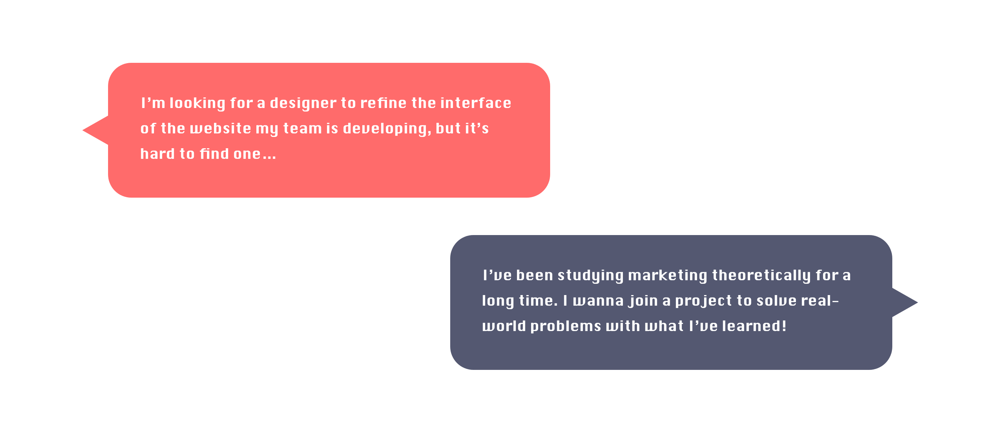

LaunchIt is a website platform that bridges innovative student start-ups with college students from various academic backgrounds. Students are eager to practice what they have learned from class through extracurricular projects. Nonetheless, many of them lack project resources or have troubles finding collaborators to propel their ongoing projects. On LaunchIt, through a streamlined experience, project leaders can post their ideas and recruit teammates; students who wish to build something impactful via collaboration can easily find projects of all kinds within seconds.
I have joined the team LaunchIt since January of 2020 as the User Experience Lead. With the goal of refining LaunchIt's user experience, I closely cooperate with my fellow designer, the PM, and Tech Lead to create strategies in product development. Through an iterative design process, I have improved the website structure, designed new functions, and refined the notification system. I am dedicated to make the platform more user-friendly and engaging.
Live at www.launchitnow.org/
The Team
LaunchIt
My Role
Redesign the entire user interface and prototype mobile view
Conduct user interviews and usability tests
Ideate with other team leaders and my fellow designer for smart solutions
Create illustrations for empty pages
Feature Highlights
♦ A fun and concise introduction to the platform

♦ Explore interesting projects of all kinds and apply to join in a few clicks

♦ As project leaders, manage applicants and get to know about them comprehensively

Design Process

Phase I
Although LaunchIt was originally prototyped by another designer, the user interface was way different from the original design at the point I joined, because the team decided to reposition the product, and many features have been changed.
Product repositioning means that another user research needs to be conducted. However, instead of doing user research first, I chose to tackle obvious design flaws that did not require much efforts for front-end developers to fix. There were two reasons for this decision: first, I didn’t want the developers to wait for too long; second, I could prepare for user interviews while they were fixing those flaws.
Phase II
User Interview
I worked along a UX designer to interview 6 college students with different academic backgrounds, asking about their decision-making process when seeking projects to join or when recruiting people for their own projects. At the end of the interviews, we also asked them to play around with LaunchIt and to provide some feedback.
Outcome
Through the interviews, we found out that users care a lot about the details of projects/positions on posts and other users’ profiles. We need a way to guide users to fill out more useful information that other users desire to see.

Phase III
Usability Testing
We found 6 people to participate in our usability tests. We assigned them several tasks to go through key features on our design and asked about their experience later on. We acquired a plenty of useful findings. With a solid base of the usability tests, we became confident to create more significant changes on our design, such as changes in navigation, information architecture, and key functions. Below are the main problems we found through the usability tests and corresponding solutions.
Problems and Solutions
♦ How can we design more intuitive navigation?

In the original version, there are two navigation bars, one on the top and one on the left. During the usability tests, we found that having two navigation bars is distracting for users, so we decided to put all navigation components on one side bar. We designed at least 5 versions of navigation bars and conducted mini usability tests to find out which one is the most intuitive. I realized that users’ conceptual models on navigation are very different from mine, since many users favored the version that I didn’t think would work at first.

♦ How can we encourage users to complete user profiles without affecting their onboarding experience?

When signing up for the first time, users are only asked to fill out some basic information. At the last step of signing up, they have the freedom to choose to either complete their profiles or skip this part for now. If they choose to skip, the system will later encourage them to complete profiles when they apply for project positions.

♦ How can we help users to easily find information they hope to see from the post details?

We reorganized the page of post details, by clearly dividing project information and recruitment information into two boxes. Readers can easily find all openings under this project and their corresponding responsibilities and qualifications. In response to user need, we also guide post creators to list out responsibilities of each opening using bullet points rather than inputing big chucks of paragraphs that are less readable. In addition, they can add project logos and images to better introduce their projects and teams.

♦ How can we help project leaders efficiently manage their applicants, learn about them, and contact them?

Project recruitment used to be considerably complex, as project leaders needed to employ different tools during the process, such as Google Form, Facebook, and Excel. We created a function for project leaders to manage applicants in one page. They are able to see all applicants’ information on this page from the applicant list. They can modify their application status and contact them via email. Click on a title at the first row, and the list will be reordered based on that title.

Illustrations for Empty Pages
To provide more delightful feedback when users reach empty pages, I designed a few illustrations with the theme of spacemen, which matches our brand identity.

Style Guide
I created a very detailed style guide to ensure style consistency throughout all pages and for maintainence. It specifies the use of colors in different conditions and includes components that are frequently used.

Takeaway & The Next Step
My main takeaway from this project is the strategy of efficiently collaborating with computer engineers during product development. I used to spend a long time on prototyping and usability tests. Only until I completed them, I was willing to deliver my design to front-end developers. In this way, time was not used wisely for the whole team, and developers easily lost patience while waiting for my design. In contrast, the process of developing LaunchIt is considerably efficient, as we streamline the process through frequent and concise communication between designers and developers. One of the crucial thing I have been doing every week is to work with the PM to create a task priority list for the developers. This allows me to trace my design progress and enables developers to schedule their tasks.
The team has recently accomplished the 3rd release. We are aiming at expanding our user base through smarter marketing strategies and more engaging user onboarding experience.


© 2021 Jiayu Luo.